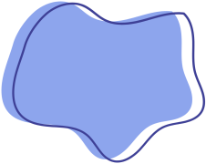
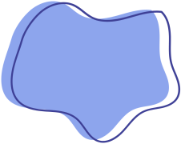
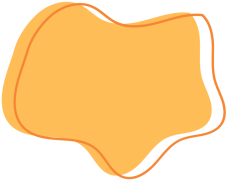
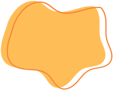

Oficinas
Com uma variedade de materiais coloridos e ferramentas divertidas, nossas oficinas proporcionam um ambiente estimulante e acolhedor para que as crianças possam se expressar livremente. Valorizamos a diversidade de ideias e incentivamos a experimentação, sempre celebrando a singularidade de cada pequeno artista. Aqui, o aprendizado acontece de forma lúdica e significativa, promovendo o desenvolvimento criativo e emocional de forma encantadora.
Batalha Nerf
Promover a diversão, o exercício físico, o trabalho em equipe, e o desenvolvimento de habilidades estratégicas e motoras, utilizando as pistolas Nerf em jogos organizados e seguros. Cenário de campo de batalha, equipamentos e regras de segurança.
 

Bolhas Gigantes
Criar bolhas gigantes é uma atividade que encanta pessoas de todas as idades. A mistura perfeita de água, detergente e um toque de mágica transforma simples bolhas de sabão em verdadeiras obras de arte flutuantes. Imagine o brilho nos olhos das crianças ao verem bolhas enormes pairando no ar, refletindo as cores do arco-íris. É um momento de diversão e admiração que ficará gravado na memória de todos os participantes. Deixe a imaginação fluir e embarque nessa jornada de encanto e magia com a nossa oficina de bolhas gigantes.
Catavento
Durante a oficina, as crianças terão a oportunidade de aprender sobre o funcionamento dos cataventos, explorando conceitos de aerodinâmica e energia eólica de forma lúdica e interativa. Com materiais simples e muita criatividade, os participantes poderão construir seu próprio cata-vento e experimentar a sensação de ver a força do vento transformada em movimento.
 

Culinária
Elas poderão experimentar pratos deliciosos e se aventurar na cozinha de forma segura e divertida. Com ingredientes coloridos e instruções simples, cada receita foi cuidadosamente planejada para estimular a criatividade e despertar o interesse dos pequenos pela culinária. Cozinhar pode ser uma atividade educativa e prazerosa para as crianças, proporcionando momentos especiais em família e criando memórias afetuosas que serão lembradas com carinho no futuro.
Pintura em Tela
Nossa oficina de pintura é um espaço acolhedor e inspirador, onde a criatividade é sempre bem-vinda. Aqui, os artistas podem explorar diferentes técnicas e estilos para dar vida às suas ideias e emoções. Os cavaletes proporcionam a base perfeita para a tela, permitindo que cada pincelada conte uma história única. Cada item na nossa oficina é um convite para a expressão artística e a celebração da beleza que está presente em cada traço e cor. Junte-se a nós e deixe sua imaginação voar, transformando simples tintas em verdadeiras obras de arte.


Pulseira Macramê
Com diferentes cores de lã e um molde, podemos dar vida a uma pulseira única e cheia de significado. As crianças vão se encantar com a ideia de poder presentear um amigo com algo feito por elas mesmas, repleto de carinho e dedicação. Além de estimular a criatividade, essa atividade promove a amizade e fortalece os laços entre os pequenos. Juntos, eles vão se divertir criando algo especial que certamente será valorizado e apreciado pelo amigo presenteado.
Slime
A criatividade e diversão se encontram. Com uma oficina de slime, os participantes têm a oportunidade de soltar a imaginação, misturar cores, texturas e criar algo único e especial. É uma atividade que estimula a coordenação motora, a concentração e a interação em grupo, proporcionando momentos de alegria e aprendizado.
Robótica
Os participantes são encorajados a criar um carrinho controlado por Bluetooth, com a orientação da nossa equipe, para colaborar na construção de forma criativa. Essa atividade não apenas proporciona aprendizado prático em engenharia e tecnologia, mas também fomenta um ambiente de competição saudável e o orgulho de ver o fruto do esforço em equipe.
Terrário
Você e seus pequenos poderão se divertir juntos enquanto aprendem a cuidar de plantas e criam um ambiente único e especial. Nossa oficina de terrários é uma oportunidade perfeita para estimular a criatividade, promover a conexão com a natureza e fortalecer os laços familiares. Venha se encantar com essa experiência enriquecedora e cheia de cores!